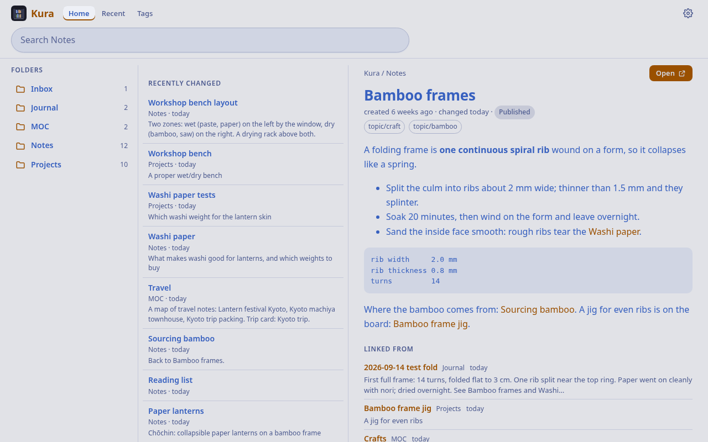
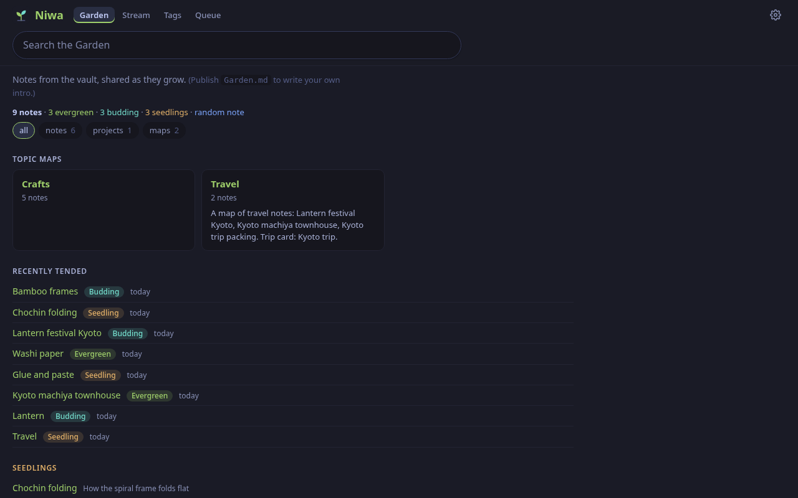
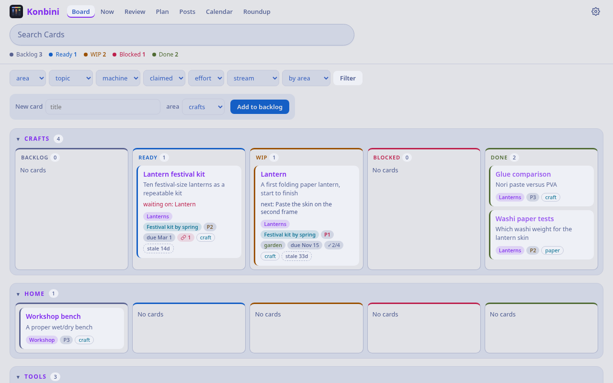
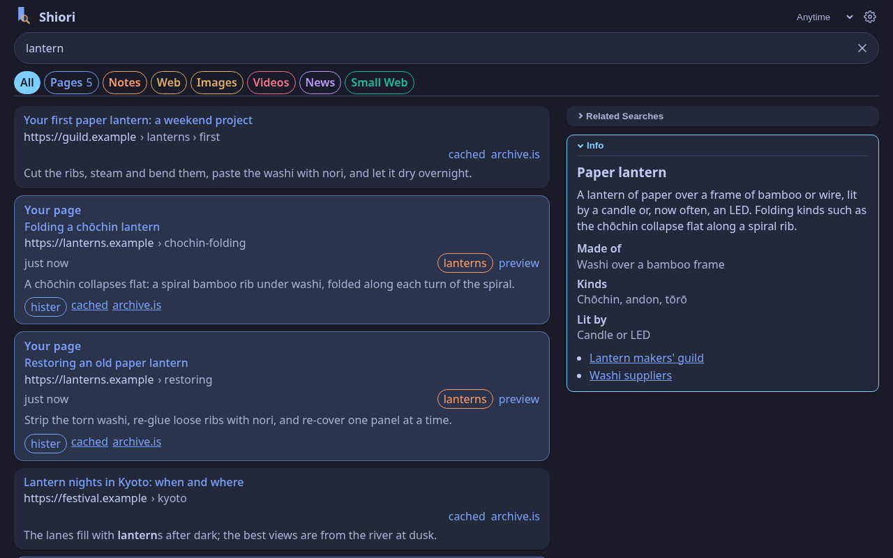

Kura
the storehouse
Every note in the vault, with working links.
- A reader: folders, tags, backlinks and a preview pane
- Full-text search
- A JSON API for notes
- Pushes every note into Hister, so your notes and your pages are searched together
Your own search for everything you read, write and build, on your own server.
Four services, each in its own repository with its own image. Links between them are optional: leave one out and the others carry on.
the storehouse
Every note in the vault, with working links.
the garden
The published garden, grown from the vault.
publish: true, set from Niwa's own Publish buttonthe shop
The project board, built from the vault's project notes.
pm, a one-file command line for the boardthe bookmark
The search front door: your pages, your notes and the web, in one search.
Machiya builds on two open-source search services, run as their upstream images with reference configuration in the machiya repository:
The machiya repository also holds the stack's smaller pieces: a landing and status page, an MCP server and a Claude Code plugin for the rooms, importers that bring feeds and code repositories into Hister, and vaultkit, the shared vault core every room vendors at a tag.
publish, growth, confidence, garden_pin). Konbini writes only board fields and new stub notes, and never edits a note's body.vault, so a search for pages finds notes too.Diagrams of components, data flow and identity: docs/architecture.md.
The same invented vault in every room: a paper-lantern workshop and a trip to Kyoto. Every room has ten themes, each light and dark. Select a picture for the full size.




Own repository, own image, own copy of the vault. Links to the other rooms are optional URLs; when one is unset, the feature that needs it turns off and nothing else breaks.
A board column, a next action, a garden stage, a due date: anything a room knows about a note is a field in that note's frontmatter, not a separate database.
Pages and APIs answer only the people you name. Agents and other people get exactly the grants you give them, and a header a caller writes is never a permission.
Out of the box every room binds to 127.0.0.1, and behind the tailnet gate an empty allow-list lets nobody in. Your history stays in Hister: the web search never queries it, and Shiori loads image thumbnails through SearXNG, never from an engine directly.
Each room can sit behind its own Tailscale Service and trust the tailnet's login, or behind your own proxy or sign-in.
Every image is native on amd64 and arm64. Run the stack with Docker or Podman, or Kura, Niwa and Konbini natively on Linux, FreeBSD, NetBSD and OpenBSD.
The full list, and what each room must not do: docs/principles.md.
The machiya README has the steps, tested on a fresh clone. They aren't copied here so they can't drift.
Machiya is pre-1.0, so expect change. The APIs between the rooms are written down in docs/contracts.
pmIssues and pull requests are welcome; each repository has a CONTRIBUTING.md.
Machiya is free software under the GNU Affero General Public License, version 3 or (at your option) any later version (AGPL-3.0-or-later).